3 Brief data analysis
Before starting to manipulate data, let’s have a look at how the churn relates to the available columns that we have. CHURN column tells us about the number of Customers who left within the last month. Around 26% of them left the platform within the last month. Notice that this analysis is performed on the train data set. The test data set could be used as well, since we assume the test data set is available during this analysis. Since we assume that the validation data set will not be available until the end of the train-test process, it should not be used during this step.
telco_train %>%
group_by(Churn) %>%
summarise(Count = n())%>%
mutate(percent = prop.table(Count)*100)%>%
ggplot(aes(reorder(Churn, -percent), percent), fill = Churn)+
geom_col(fill = c("red", "blue"))+
xlab("Churn") +
ylab("Percent")+
ggtitle("Churn Percent")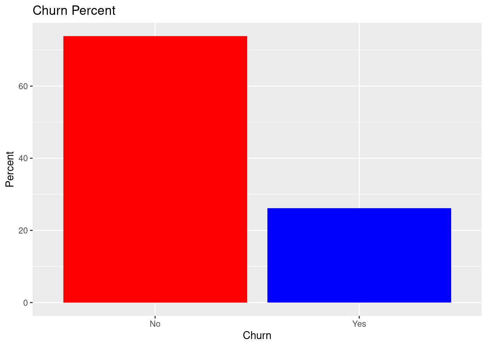
If we check the “social” columns, we can see that churn rate is higher in senior citizens, those who are single, and those who are not dependent.
theme1 <- theme_bw()+
theme(axis.text.x = element_text(angle = 0, hjust = 1, vjust = 0.5),legend.position="none")
theme2 <- theme_bw()+
theme(axis.text.x = element_text(angle = 90, hjust = 1, vjust = 0.5),legend.position="none")
options(repr.plot.width = 12, repr.plot.height = 8)
plot_grid(ggplot(telco_train, aes(x=SeniorCitizen,fill=Churn))+ geom_bar(position = 'fill')+theme1,
ggplot(telco_train, aes(x=Partner,fill=Churn))+ geom_bar(position = 'fill')+theme1,
ggplot(telco_train, aes(x=Dependents,fill=Churn))+ geom_bar(position = 'fill')+theme_bw() +
scale_x_discrete(labels = function(x) str_wrap(x, width = 10)),
align = "h")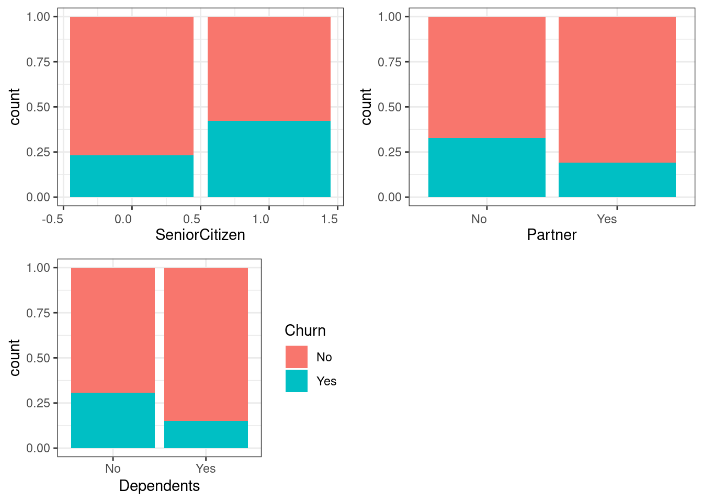
If we check the columns that relate to the services, we can see that churn rate is higher in those who hired fiber optic, and those who do not buy additional services, such as security, backups, device protection or tech support.
options(repr.plot.width = 12, repr.plot.height = 8)
plot_grid(ggplot(telco_train, aes(x=InternetService,fill=Churn))+ geom_bar(position = 'fill')+ theme1+
scale_x_discrete(labels = function(x) str_wrap(x, width = 10)),
ggplot(telco_train, aes(x=OnlineSecurity,fill=Churn))+ geom_bar(position = 'fill')+theme1+
scale_x_discrete(labels = function(x) str_wrap(x, width = 10)),
ggplot(telco_train, aes(x=OnlineBackup,fill=Churn))+ geom_bar(position = 'fill')+theme1+
scale_x_discrete(labels = function(x) str_wrap(x, width = 10)),
ggplot(telco_train, aes(x=DeviceProtection,fill=Churn))+ geom_bar(position = 'fill')+theme1+
scale_x_discrete(labels = function(x) str_wrap(x, width = 10)),
ggplot(telco_train, aes(x=TechSupport,fill=Churn))+ geom_bar(position = 'fill')+theme1+
scale_x_discrete(labels = function(x) str_wrap(x, width = 10)),
ggplot(telco_train, aes(x=StreamingTV,fill=Churn))+ geom_bar(position = 'fill')+theme_bw()+
scale_x_discrete(labels = function(x) str_wrap(x, width = 10)),
align = "h")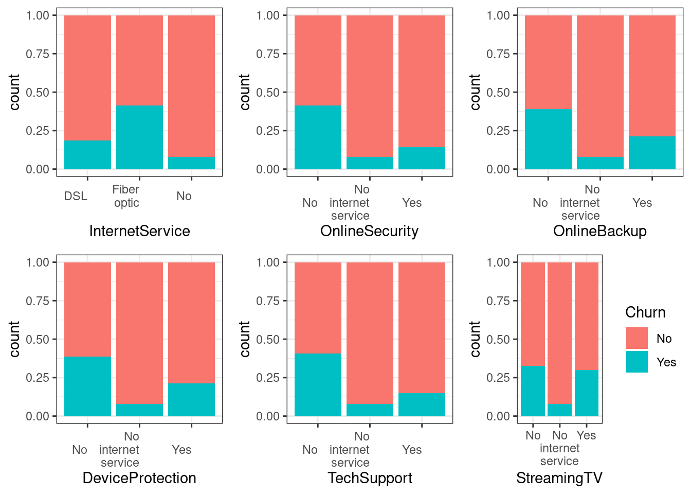
If we check those columns that relate to the usage of the services, we can see that those who have a monthly contract, use paperless billing or pay by electronic check are more likely to leave.
plot_grid(ggplot(telco_train, aes(x=Contract,fill=Churn))+
geom_bar(position = 'fill')+theme1+
scale_x_discrete(labels = function(x) str_wrap(x, width = 10)),
ggplot(telco_train, aes(x=PaperlessBilling,fill=Churn))+
geom_bar(position = 'fill')+theme1+
scale_x_discrete(labels = function(x) str_wrap(x, width = 10)),
ggplot(telco_train, aes(x=PaymentMethod,fill=Churn))+
geom_bar(position = 'fill')+theme_bw()+
scale_x_discrete(labels = function(x) str_wrap(x, width = 10)),
align = "h")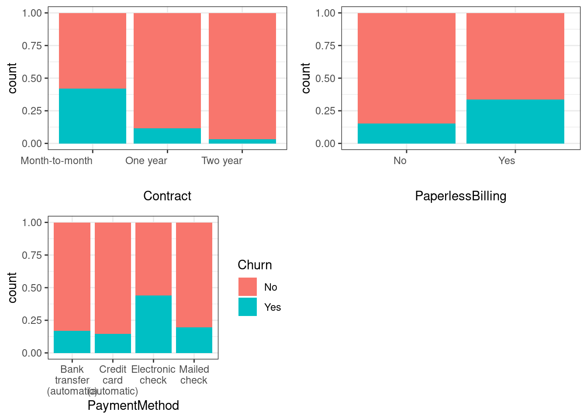
We also have 3 columns with non-discrete data. These are tenure, monthly charges and Total charges. If we look at the median tenure we can see that its about 10 months for those who leave the company.
options(repr.plot.width =6, repr.plot.height = 2)
ggplot(telco_train, aes(y= tenure, x = "", fill = Churn)) +
geom_boxplot()+
theme_bw()+
xlab(" ")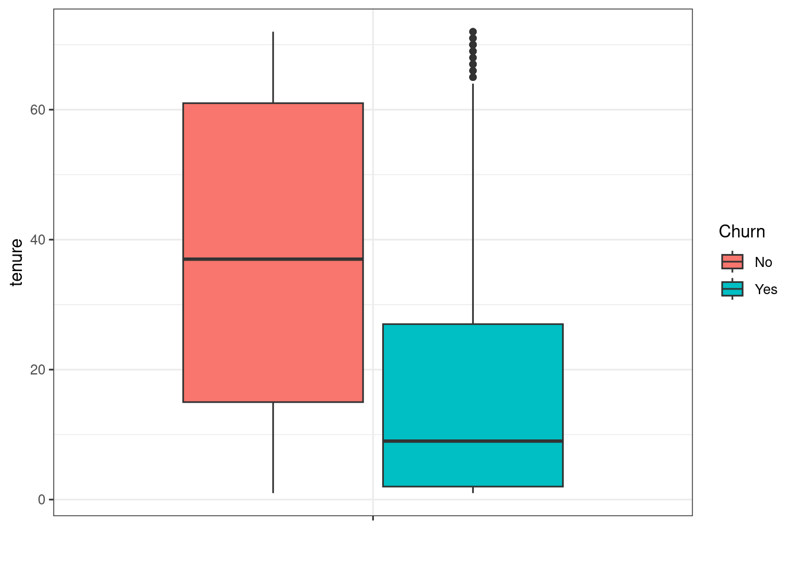
If we have a look at the median amount of money that churned customers spend, we can see its somewhere around 80 dolars.
ggplot(telco_train, aes(y= MonthlyCharges, x = "", fill = Churn)) +
geom_boxplot()+
theme_bw()+
xlab(" ")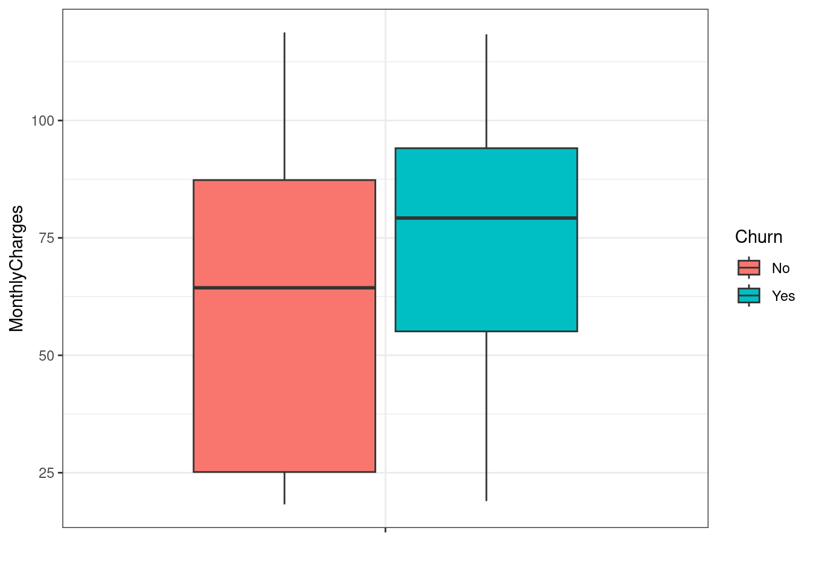
Total charges do not yield anything significantly different, so we omit it.
3.1 Conversion of the Data
Some variables need some kind of manipulation before exploring the data. Since the transformation is performed over the complete data set, we build the data set (the same as before).
Turn “senior citizen” from integer to categories.
# Turn senior citizen into categories
telco$SeniorCitizen <- ifelse(telco$SeniorCitizen==1, "Yes", "No")Reduce dimensionality of “OnlineSecurity”, “OnlineBackup”, “DeviceProtection”, “TechSupport”, “StreamingTV”, “StreamingMovies”. Simplify them to only 2 categories
cols <- c("OnlineSecurity", "OnlineBackup", "DeviceProtection", "TechSupport", "StreamingTV", "StreamingMovies")
for (i in cols) {
telco[[i]] <- ifelse(telco[[i]]=="No internet service", "No", ifelse(telco[[i]]=="Yes", "Yes", "No"))
}
cols <- c("PhoneService", "MultipleLines")
for (i in cols) {
telco[[i]] <- ifelse(telco[[i]]=="No phone service", "No", ifelse(telco[[i]]=="Yes", "Yes", "No"))
}All variables are discrete except for the tenure, the monthly charges and the total charges, which are continuous. These variable can be discretized.
Turn these variables to discrete values.
# mutate the tenure into 12-month categories.
telco$tenure <- cut(telco$tenure, breaks=c(-Inf, 12, 24, 36, 48, 60, 72, Inf), labels=c("1 Year", "2 Years", "3 Years", "4 Years", "5 Years", "6 Years", "7 Years"))
ggplot(telco, aes(tenure, fill = tenure)) + geom_bar()+ theme1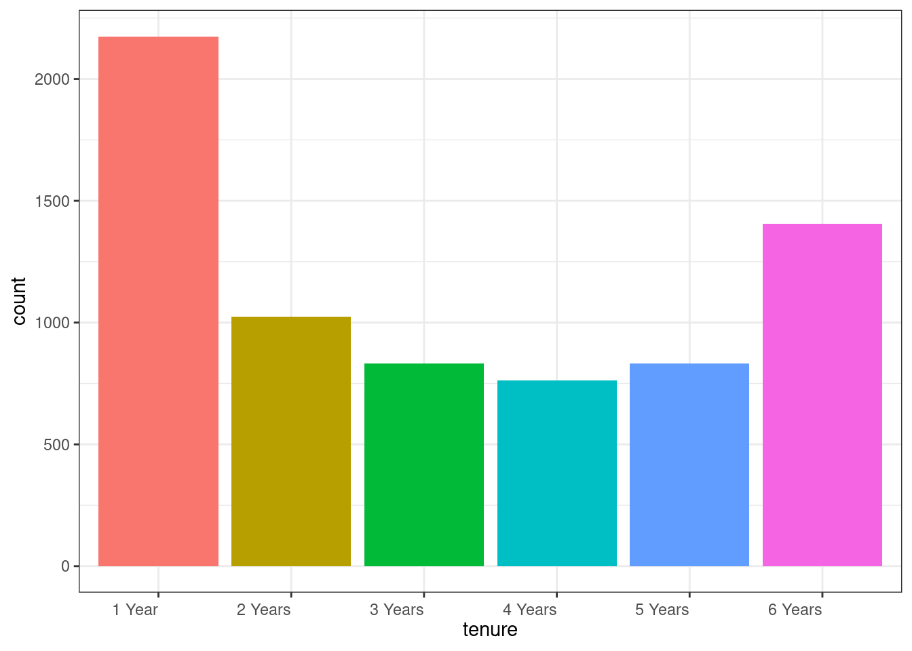
telco$MonthlyCharges <- cut(telco$MonthlyCharges, breaks=c(-Inf, 10, 20, 30, 40, 50, 60, 70, 80, 90, 100, 110, Inf), labels=c(10, 20, 30, 40, 50, 60, 70, 80, 90, 100, 110, 120))
ggplot(telco, aes(MonthlyCharges, fill = MonthlyCharges)) + geom_bar()+ theme1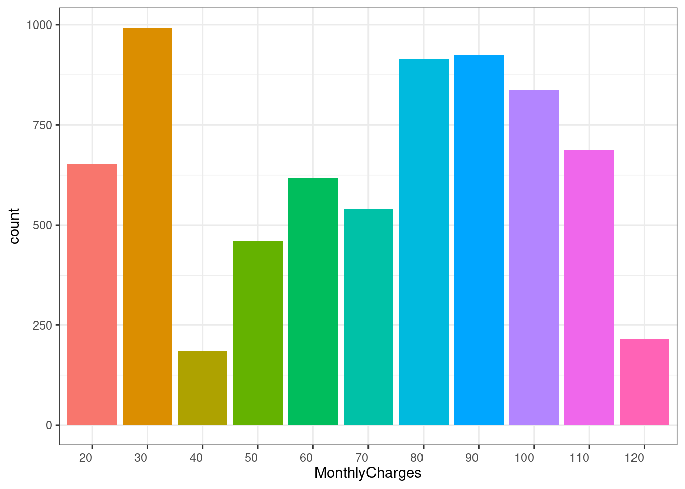
telco$TotalCharges <- cut(telco$TotalCharges, breaks=c(-Inf, 1000, 2000, 3000, 4000, 5000, 6000, 7000, 8000, Inf), labels=c(1000, 2000, 3000, 4000, 5000, 6000, 7000, 8000, 9000))
ggplot(telco, aes(TotalCharges, fill = TotalCharges)) + geom_bar()+ theme1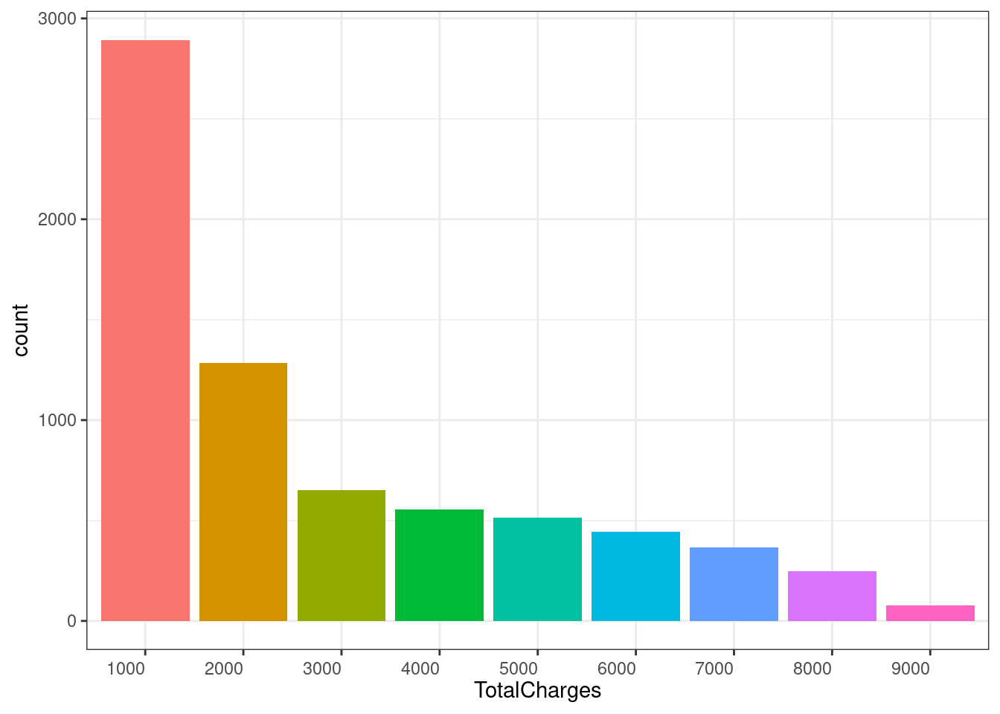
3.2 What variables have more impact in a customer to leave the company
To analyse the impact of each variable in a customer to leave the company, the correlation between Churn variable and the rest of variables have been analysed using the Pearson Chi-squared test, in R the “chisq.test” function. This function has been able to be applied to all variables after the conversion of the continue values to discrete.
First conclusion is that some variables do not have impact, since its p-value is similar or greater than 0.05, therefore it not possible to reject the null hypothesis (that it is that there is not relation between those variables). These are: Gender, Phone service and Multiple lines.
##
## Pearson's Chi-squared test with Yates' continuity correction
##
## data: telco_train$Churn and telco_train$gender
## X-squared = 0.0019477, df = 1, p-value = 0.9648##
## Pearson's Chi-squared test with Yates' continuity correction
##
## data: telco_train$Churn and telco_train$PhoneService
## X-squared = 0.027266, df = 1, p-value = 0.8688##
## Pearson's Chi-squared test with Yates' continuity correction
##
## data: telco_train$Churn and telco_train$MultipleLines
## X-squared = 5.0799, df = 1, p-value = 0.02421Regarding the rest of variables, they can be ordered using the value of the Chi-squared test. Those which value is higher has more importance than those whose value is smaller.
a=chisq.test(telco_train$Churn,telco_train$SeniorCitizen)
b=chisq.test(telco_train$Churn,telco_train$Dependents)
c=chisq.test(telco_train$Churn,telco_train$Partner)
e=chisq.test(telco_train$Churn,telco_train$InternetService)
f=chisq.test(telco_train$Churn,telco_train$OnlineSecurity)
g=chisq.test(telco_train$Churn,telco_train$OnlineBackup)
h=chisq.test(telco_train$Churn,telco_train$DeviceProtection)
i=chisq.test(telco_train$Churn,telco_train$TechSupport)
j=chisq.test(telco_train$Churn,telco_train$StreamingTV)
k=chisq.test(telco_train$Churn,telco_train$StreamingMovies)
l=chisq.test(telco_train$Churn,telco_train$Contract)
m=chisq.test(telco_train$Churn,telco_train$PaperlessBilling)
n=chisq.test(telco_train$Churn,telco_train$PaymentMethod)
o=chisq.test(telco_train$Churn,telco_train$tenure)
p=chisq.test(telco_train$Churn,telco_train$TotalCharges)
q=chisq.test(telco_train$Churn,telco_train$MonthlyCharges)
p_value=matrix(c("SeniorCitizen","Dependents","Partner","InternetService","OnlineSecurity","OnlineBackup","DeviceProtection","TechSupport","StreamingTV","StreamingMovies","Contract","PaperlessBilling","PaymentMethod","Tenure","TotalCharges","MonthlyCharges",a$p.value,b$p.value,c$p.value,e$p.value,f$p.value,g$p.value,h$p.value,i$p.value,j$p.value,k$p.value,l$p.value,m$p.value,n$p.value,o$p.value,p$p.value,q$p.value),nrow = 16, ncol = 2)
p_value=data.frame(p_value)
p_value## X1 X2
## 1 SeniorCitizen 5.48882281125885e-21
## 2 Dependents 2.97469601274669e-22
## 3 Partner 1.34248512780826e-19
## 4 InternetService 1.77972143903456e-76
## 5 OnlineSecurity 4.12322909432194e-25
## 6 OnlineBackup 2.97080034822976e-06
## 7 DeviceProtection 4.39757270110077e-06
## 8 TechSupport 1.73428412644599e-21
## 9 StreamingTV 6.81304237465227e-05
## 10 StreamingMovies 0.0275634402279799
## 11 Contract 6.16829952170963e-123
## 12 PaperlessBilling 7.78254031045766e-34
## 13 PaymentMethod 6.89371476808833e-66
## 14 Tenure 1.85184410060136e-90
## 15 TotalCharges 1.88138061230147e-29
## 16 MonthlyCharges 2.56208956165999e-44## X1 X2
## 1 SeniorCitizen 47.651573
## 2 Dependents 50.566730
## 3 Partner 44.454594
## 4 InternetService 175.420010
## 5 OnlineSecurity 57.147991
## 6 OnlineBackup 13.726679
## 7 DeviceProtection 13.334458
## 8 TechSupport 48.803692
## 9 StreamingTV 10.594087
## 10 StreamingMovies 4.591265
## 11 Contract 282.398543
## 12 PaperlessBilling 77.236010
## 13 PaymentMethod 151.040006
## 14 Tenure 207.616476
## 15 TotalCharges 67.142962
## 16 MonthlyCharges 101.372921p_valuelog=p_value
ggplot(p_valuelog,aes(x=reorder(X1,-X2),y=X2)) + geom_bar(stat="identity") + theme(axis.text.x= element_text(angle=45,hjust=1),axis.text.y=element_blank()) +
xlab("Descriptive Statistics") +
ylab("Influence")+
ggtitle("Influence Of Descriptive Statistics vs Churn")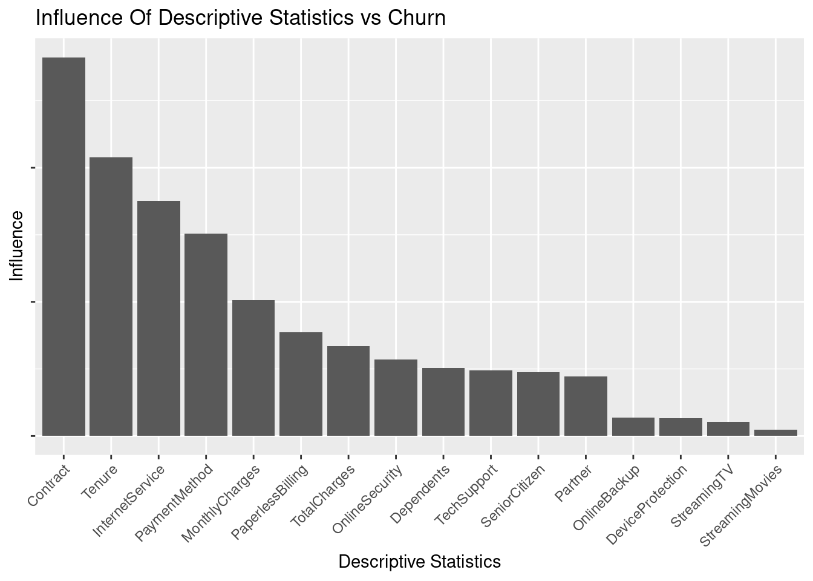
The following graphics shows the relation between the most influential variables and churn:
ggplot(data = telco_train, aes(x = Contract, fill = Churn)) +
geom_bar(position = "fill") + ylab("Proportion")+ ggtitle("Churn vs Contract")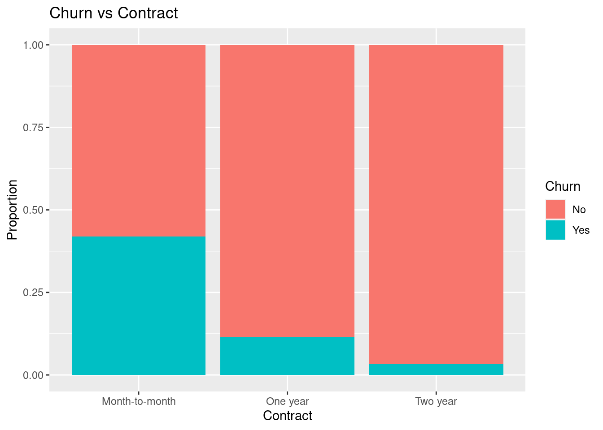
ggplot(data = telco_train, aes(x = tenure, fill = Churn)) +
geom_bar(position = "fill") + ylab("Proportion")+ ggtitle("Churn vs Tenure")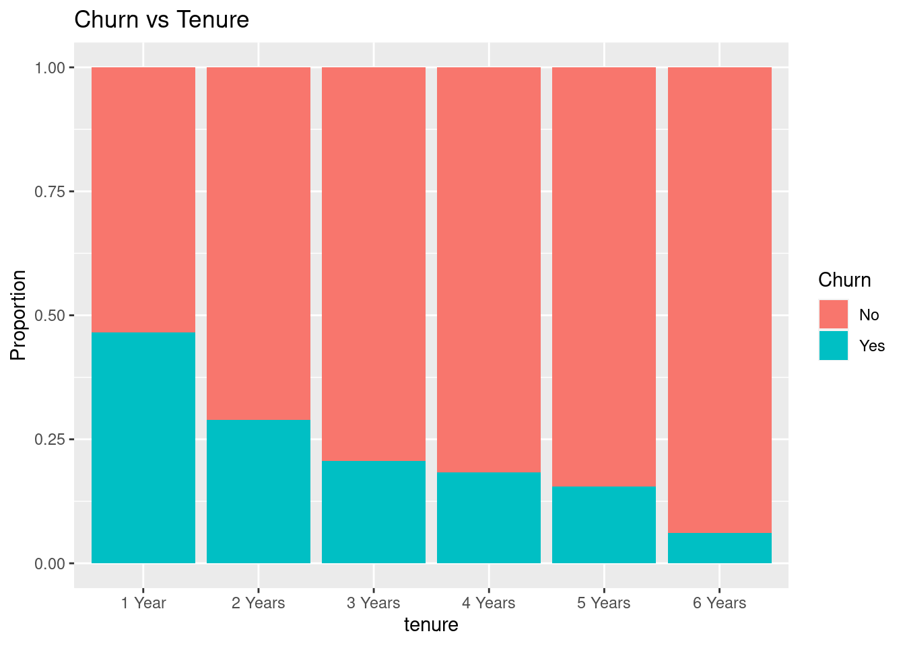
ggplot(data = telco_train, aes(x = InternetService, fill = Churn)) +
geom_bar(position = "fill") + ylab("Proportion")+ ggtitle("Churn vs Internet Service")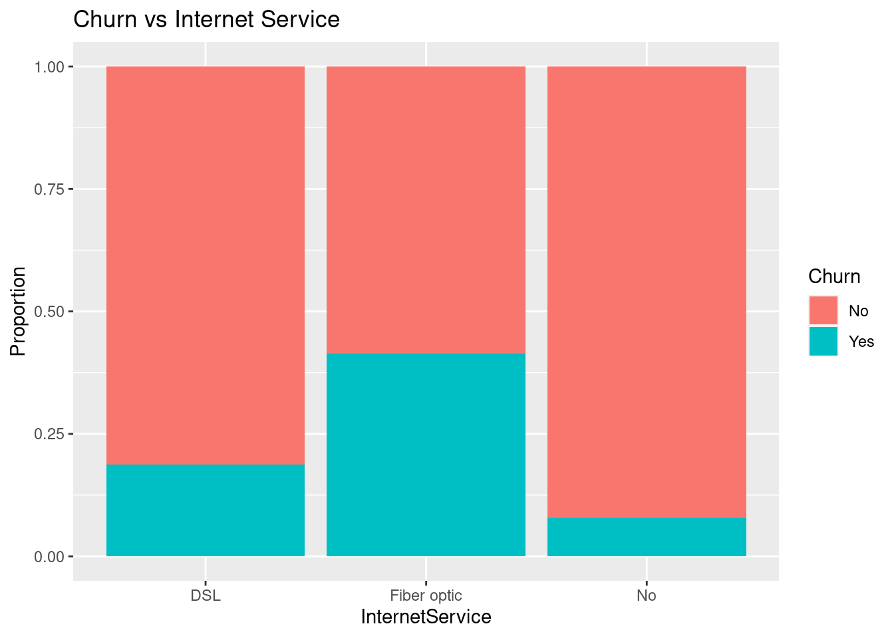
ggplot(data = telco_train, aes(x = PaymentMethod, fill = Churn)) +
geom_bar(position = "fill") + ylab("Proportion")+ ggtitle("Churn vs Payment Method")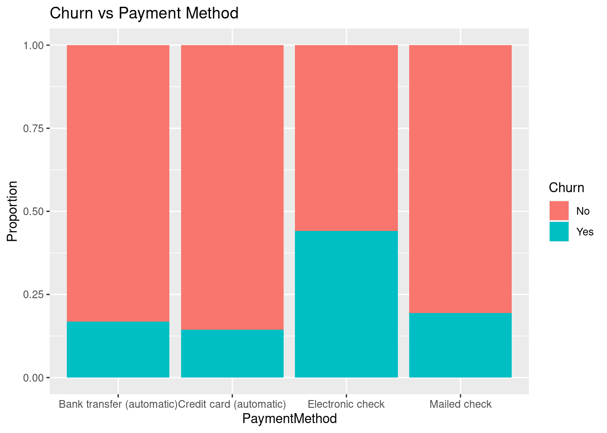
ggplot(data = telco_train, aes(x = MonthlyCharges, fill = Churn)) +
geom_bar(position = "fill") + ylab("Proportion")+ ggtitle("Churn vs Monthly Charges")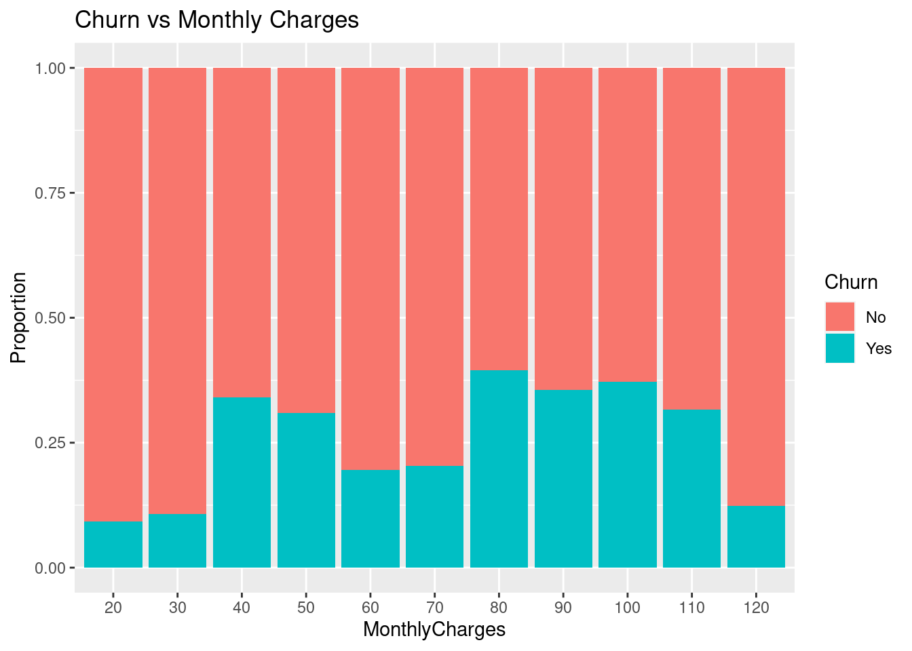
ggplot(data = telco_train, aes(x = TotalCharges, fill = Churn)) +
geom_bar(position = "fill") + ylab("Proportion")+ ggtitle("Churn vs Total charges")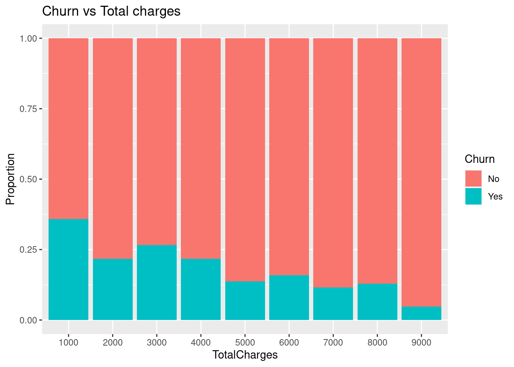
ggplot(data = telco_train, aes(x = PaperlessBilling, fill = Churn)) +
geom_bar(position = "fill") + ylab("Proportion")+ ggtitle("Churn vs PapersBilling")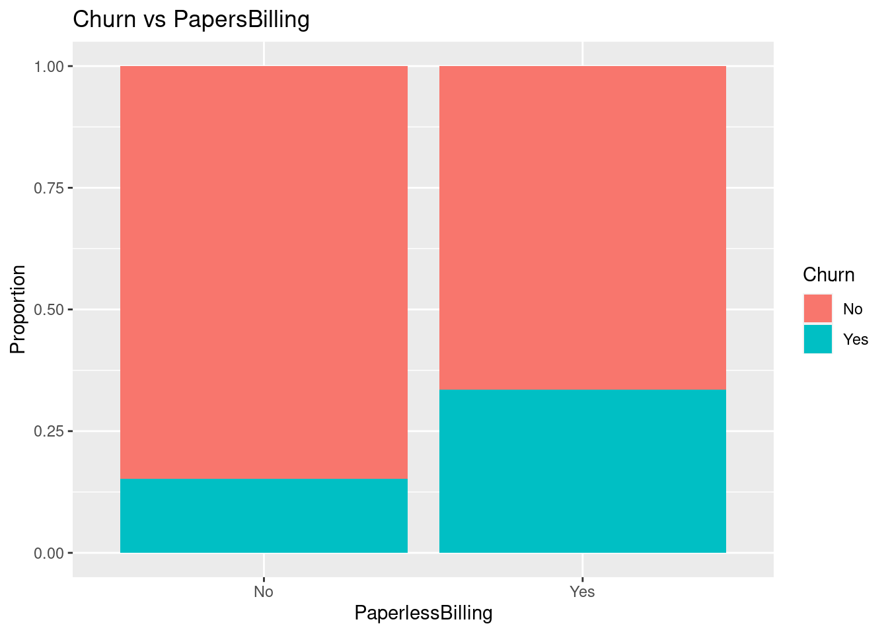
We can compare a variable with high Chi-p value (for instance, “Contract”“) versus one with a low value (for instance,”gender”“) to understand these results. It can be seen how the kind of contract influences the behaviour of the customer, while the gender does not have a big influence (it does not matter if the customer is a male or a female).
ggplot(data = telco_train, aes(x = Contract, fill = Churn)) +
geom_bar(position = "fill") + ylab("Proportion")+ ggtitle("Churn vs Contract")
ggplot(data = telco_train, aes(x = gender, fill = Churn)) +
geom_bar(position = "fill") + ylab("Proportion")+ ggtitle("Churn vs Gender")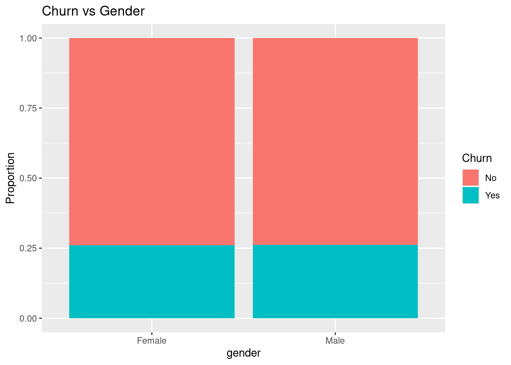
3.3 Filtering of customers with more risk to churn
From the customers that remain in the company, there is 2,5% of those customers with the most influential variables set to the values in which the customer has higher probability of leaving the platform:
- Contract to Month-to-month
- Tenure to One year
- Internet Service to Fiber optic
- PaymentMethod to Electronic Check
## customerID gender SeniorCitizen Partner Dependents tenure PhoneService
## 3527 9026-RNUJS Male Yes No No 1 Year Yes
## 3141 7901-HXJVA Male No No No 2 Years Yes
## 4793 7067-KSAZT Female Yes Yes No 6 Years Yes
## 6324 0691-NIKRI Female No No No 4 Years Yes
## 5728 8707-HOEDG Female No Yes Yes 6 Years Yes
## 4571 1386-ZIKUV Male No No No 1 Year Yes
## MultipleLines InternetService OnlineSecurity OnlineBackup DeviceProtection
## 3527 No DSL No No Yes
## 3141 No Fiber optic No No Yes
## 4793 Yes Fiber optic No Yes Yes
## 6324 Yes Fiber optic No No Yes
## 5728 Yes Fiber optic No Yes Yes
## 4571 No No No No No
## TechSupport StreamingTV StreamingMovies Contract PaperlessBilling
## 3527 No No No Month-to-month No
## 3141 No No No Month-to-month No
## 4793 No Yes Yes One year Yes
## 6324 Yes Yes Yes One year Yes
## 5728 Yes Yes Yes Two year Yes
## 4571 No No No Month-to-month Yes
## PaymentMethod MonthlyCharges TotalCharges Churn
## 3527 Electronic check 60 1000 Yes
## 3141 Electronic check 80 2000 No
## 4793 Electronic check 110 7000 Yes
## 6324 Credit card (automatic) 110 5000 No
## 5728 Electronic check 120 8000 No
## 4571 Mailed check 20 1000 No## [1] 2596 21telChurnNoContractMonth = filter(telChurnNo,telChurnNo$Contract=="Month-to-month")
dim(telChurnNoContractMonth)## [1] 1122 21telChurnNoContractMonthTen = filter(telChurnNoContractMonth,telChurnNoContractMonth$tenure=="1 Year")
dim(telChurnNoContractMonthTen)## [1] 490 21telChurnNoContractMonthTenInternet = filter(telChurnNoContractMonthTen,telChurnNoContractMonthTen$InternetService=="Fiber optic")
dim(telChurnNoContractMonthTenInternet)## [1] 138 21telChurnNoContractMonthTenInternetPayment = filter(telChurnNoContractMonthTenInternet,telChurnNoContractMonthTenInternet$PaymentMethod=="Electronic check")
dim(telChurnNoContractMonthTenInternetPayment)## [1] 87 21## [1] 3516 21## [1] 2.6450513.4 Preliminary Conclusions
1.-This Data Set has losts of observations and variables that are easy to understand and handle.
2.-The 26% of the customers have left the company.
3.-The variables more important in relation with people who leave the company are (per categories):
*Demography: Customer with more no dependences and without partner and seniors are more likely to leave the company
*Services: Customer with less services are more likely to leave the company
*Customer account: Customer with monthly contract, with paperlessbilling and with Payment method Electronic Check are more likely to leave the company
4.-There are 16 variables whose p-value is very close to 0, showing the importance of all of them. However, we would like to reduce the number of variables for further study. Therefore, we would choose four or five variables with lower p-value, that is, closer to 0. These are: contract, tenure, internet service and payment method.
5.-From the customers that remain in the company, there is 2,6% of those customers with the most influential variables set to the values in which the customer has higher probability of leaving the platform:
- Contract to Month-to-month
- Tenure to One year
- Internet Service to Fiber optic
- PaymentMethod to Electronic Check